This pack shows the rendered portfolio at bhanu.build for a reviewer who has only read its text. Every image is a real render of the site (the same files that are live), captured in Google Chrome on 13 November 2026 (Pacific time; homepage re-shot at about 12:25 PM after Verified Call became the lead chapter); nothing is mocked up or retouched. Viewports: desktop 1440×900 (case-study pages rendered at 2x and scaled to 1440 wide; homepage at 1x), phone 390×844 at 2x (iPhone user agent, touch). Clips are 1280×800 recordings of headless Chrome (software rendering, so frame pacing is rougher than in a GPU browser). Each shot was taken after loading and animation had finished: entrance done, chapter paintings decoded, films playing for 2+ s, count-up numbers at their final values. Captions describe what is on screen and the design decision it shows.
Short recordings of the motion that still images cannot show. Each is muted, H.264.
clip-home-cloud-entrance.mp4Homepage cloud entrance. Homepage, 1280×800, 7.4 s. Cold load: night-blue hold until the painting's first frame, then the clouds part, the view descends onto the bridge and the title, nav and chat bar arrive in sequence.clip-home-chapter-to-chapter-scroll.mp4Chapter to chapter. Homepage, 1280×800, 7.2 s. The Verified Call chapter is pinned with its film playing; a 3.2 s smooth scroll (Lenis) brings the Stressie chapter up over it as a solid sheet; the Stressie film starts on its title card, then the app.clip-vc-meet-panel-states.mp4Verified Call panel states. verified-call.html hero, 1280×800, 8 s. The live replay cycles on its own: checks resolve one by one (Checking), all green (Verified), then Open apps turns amber with the named fact (Needs a look).
Homepage
index.html. One painted San Francisco world: a cloud entrance into the Golden Gate hero, five pinned work chapters (each a painted room with the product's launch film mapped onto the painted device), then a night footer. The paintings follow the real sun position in San Francisco; these captures were made at about 11:15–11:30 AM PST, so they show the day variants (the footer is always the night plate). Live: https://bhanu.build/
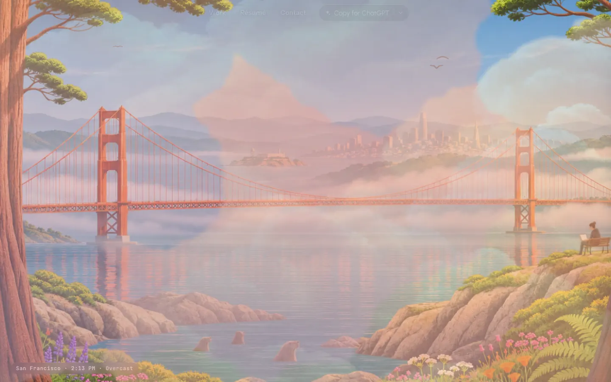
home-desk-01-entrance-mid.webp · Desktop 1280×800 (frame from the entrance clip)Opening, about 0.75 s in. Three layered cloud plates scale and drift apart while the painted bridge scene settles from a pushed-in aerial framing; the title has not dropped yet.Decision shown: the site opens inside the same cloud bank used between sections, then the clouds part onto the hero (~2.5 s). Any wheel, key or tap skips it; it is off under prefers-reduced-motion.
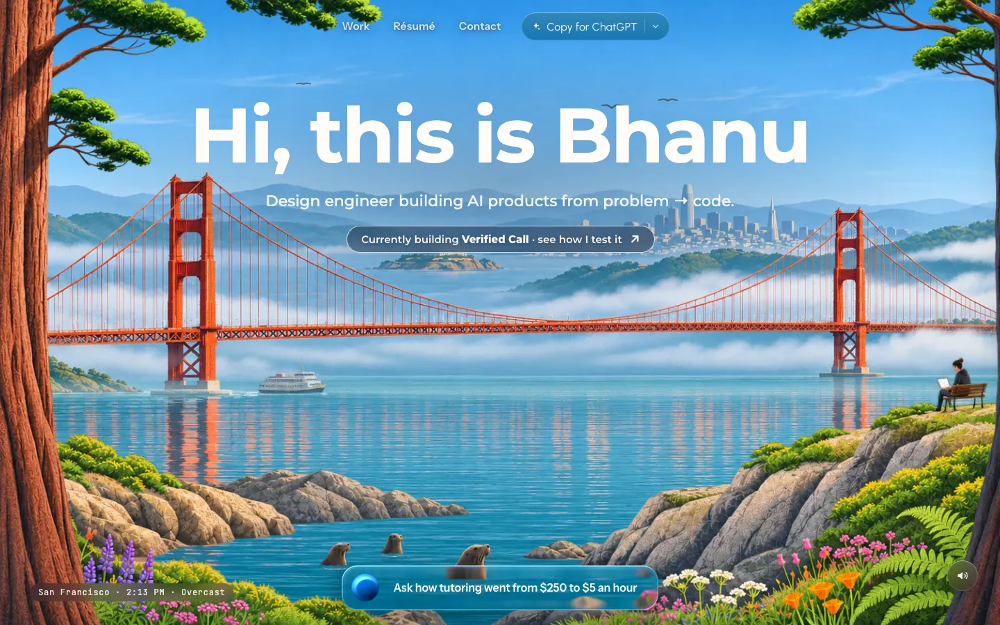
home-desk-02-hero.webp · Desktop 1440×900Hero after the entrance has finished (html.entry-done + hero-go). Painted Golden Gate scene; centred nav (Work, Résumé, Contact, "Copy for ChatGPT" picker); title "Hi, this is Bhanu"; line "Design engineer building AI products from problem → code."; a "Currently building Verified Call · see how I test it" pill that opens the case study at its Evidence section; an Ask-AI bar at the bottom with a suggested question; San Francisco time/weather ticker bottom left; sound toggle bottom right.Decision shown: the hero carries only a greeting, one line, one link and the chat bar over the painting; there are no stats or project cards above the fold.
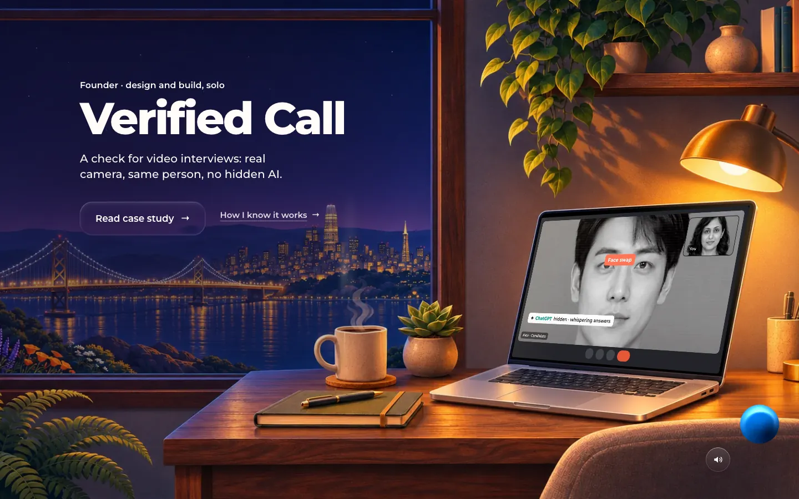
home-desk-03-chapter-verified-call.webp · Desktop 1440×900Work chapter 1, Verified Call: painted home office; the Verified Call launch film plays on the painted laptop (a Meet call labelled with a face swap and a hidden ChatGPT overlay). Left column: "Founder · design and build, solo", title, the line "I'm building Verified Call solo: it checks that the person on a video interview is on a real camera, stays the same person, and isn't using a hidden AI tool.", proof "30/30 caught, each of 4 hidden AI tools" / "6 of 17 attacks still open, published", a quieter line "5 hiring teams in talks · 3 weeks to a first working version", stack chips (Electron, React, Chrome extension, MediaPipe, Amazon Rekognition, Deepgram), "Read case study" and a second link "How I know it works" to the Evidence section.Decision shown: Verified Call leads and holds the screen ~50% longer than the other chapters; each chapter is one pinned viewport with the same left-column template (role, title, one line, two numbers, stack, one CTA); the product appears as a film inside the painting, not as a screenshot card. The blue sphere bottom right is the persistent voice/chat orb.
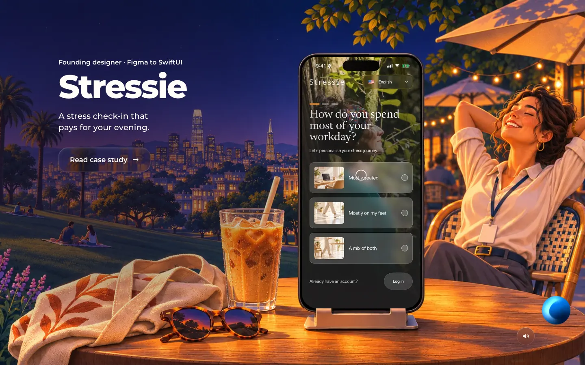
home-desk-04-chapter-stressie.webp · Desktop 1440×900Work chapter 2, Stressie: painted café terrace in a park; the Stressie launch film plays on a painted iPhone on a stand (onboarding question "How do you spend most of your workday?"). Proof: "12% → 56% daily engagement in V2 pilots", "$600K funding it helped secure"; chips Figma, SwiftUI, Metal.Same chapter template as above; the device type in the painting matches the product platform (phone for an iOS app).
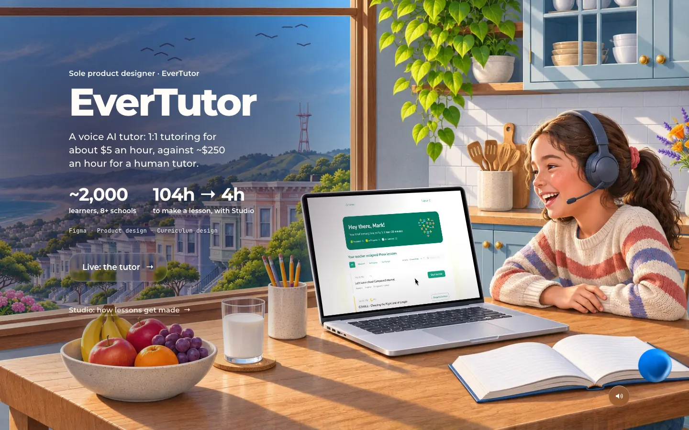
home-desk-05-chapter-evertutor-live.webp · Desktop 1440×900Work chapter 3, EverTutor (Live and Studio together): painted kitchen table, a student with a headset; the launch film on the painted laptop opens with price title cards ("Before EverTutor Live, 1:1 tutoring cost $250" → "$5"). Kicker "Sole product designer · EverTutor"; line "A voice AI tutor: 1:1 tutoring for about $5 an hour, against ~$250 an hour for a human tutor."; proof "~2,000 learners, 8+ schools", "104h → 4h to make a lesson, with Studio"; chips Figma, Product design, Curriculum design; two links: "Live: the tutor" and "Studio: how lessons get made".Decision shown: the two EverTutor products share one chapter, and the chips state the role (designed, not engineered).
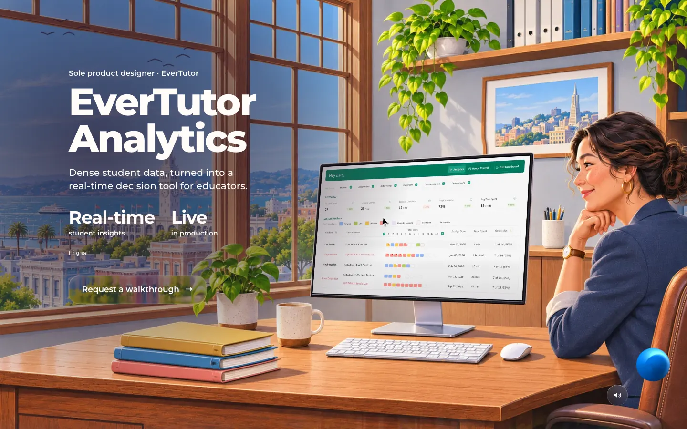
home-desk-06-chapter-evertutor-analytics.webp · Desktop 1440×900Work chapter 4, EverTutor Analytics: painted study, an educator at a monitor showing the analytics dashboard (overview metrics, lesson-mastery grid per student). Proof "Real-time student insights", "Live in production"; CTA "Request a walkthrough" (no public case study).The CTA changes with what can be shown: a walkthrough request instead of a case study link.
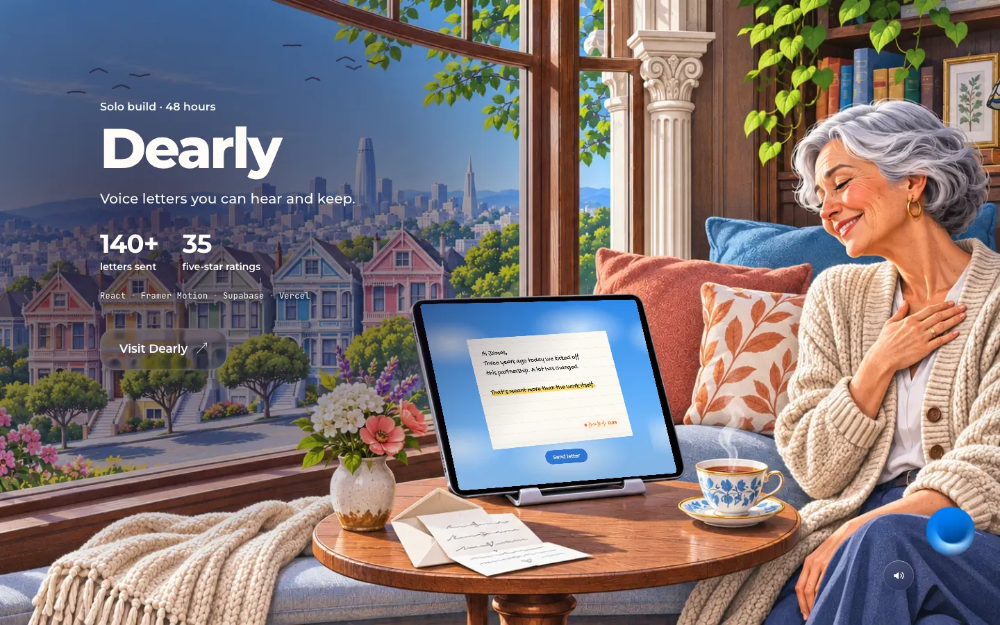
home-desk-07-chapter-dearly.webp · Desktop 1440×900Work chapter 5, Dearly: painted bay-window room with Victorian houses outside; the film on the painted iPad shows a handwritten-style letter with a highlighted line, a voice-note chip and "Send letter". Proof "140+ letters sent", "35 five-star ratings"; CTA "Visit Dearly" (external).Film paused on the letter-composer frame.
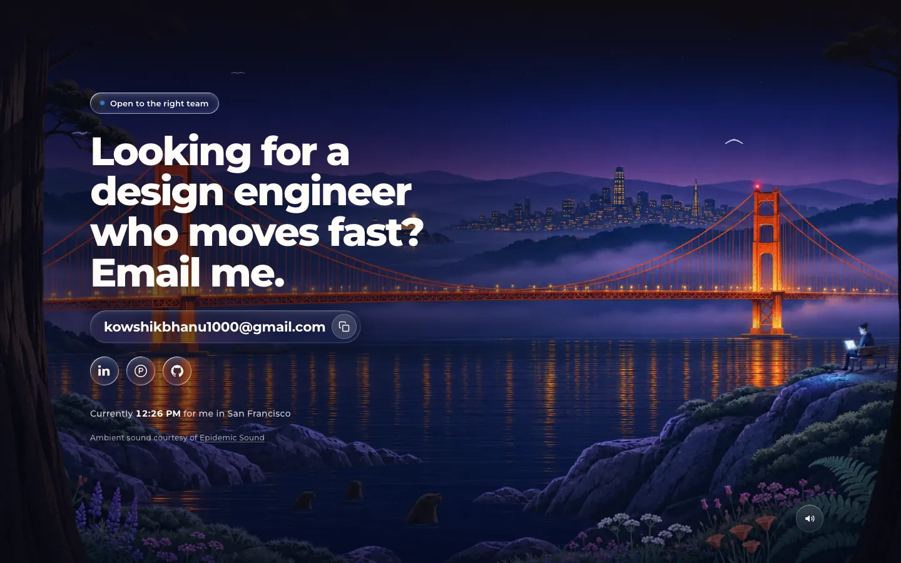
home-desk-08-footer.webp · Desktop 1440×900Footer / contact: the hero's bridge view repainted at night. Status pill "Open to the right team", headline "Looking for a design engineer who moves fast? Email me.", email address with a copy button, LinkedIn, a 'P' profile icon and GitHub, "Currently [time] for me in San Francisco", and the Epidemic Sound credit for the ambient audio.Decision shown: the footer mirrors the hero composition (same viewpoint, night) so the page closes where it opened.
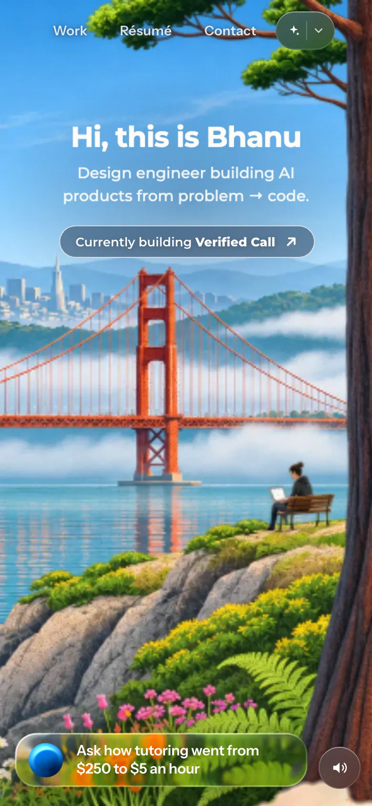
home-phone-02-hero.webp · Phone 390×844 (@2x)Hero on a phone after the entrance. The painting is cropped to the south tower, the city and the figure on the bench; title, line and the "Currently building" pill sit in the sky; the Ask-AI bar and sound toggle sit at the bottom.Responsive behaviour: the painting re-crops around a focal point instead of shrinking the whole landscape.
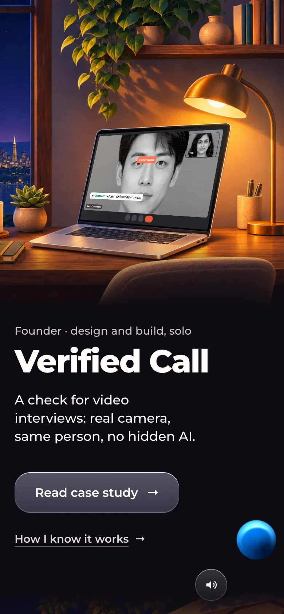
home-phone-03-chapter-verified-call.webp · Phone 390×844 (@2x)Verified Call chapter on a phone: the painting (with the launch film on the laptop) stacks above the copy; the copy runs full width with the proof numbers stacked.Responsive behaviour: chapters are not pinned on phones; painting first, then copy.
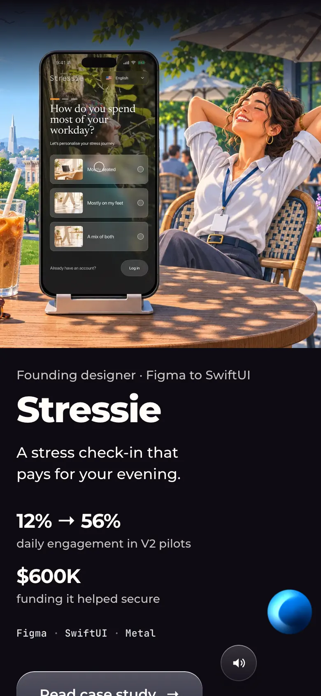
home-phone-04-chapter-stressie.webp · Phone 390×844 (@2x)Stressie chapter on a phone, same stacking as above; the film plays on the painted iPhone.
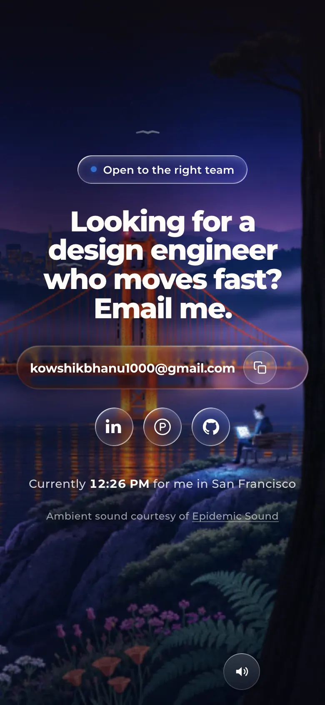
home-phone-05-footer.webp · Phone 390×844 (@2x)Footer on a phone: centred headline, email field with copy button, social icons and local-time line over the night painting.
Case study: Verified Call
verified-call.html. Dark page; the product UI is shown as live HTML replays of the shipped extension and app (not static mock-ups), with real test numbers and a section on fairness to the candidate. Live: https://bhanu.build/verified-call.html
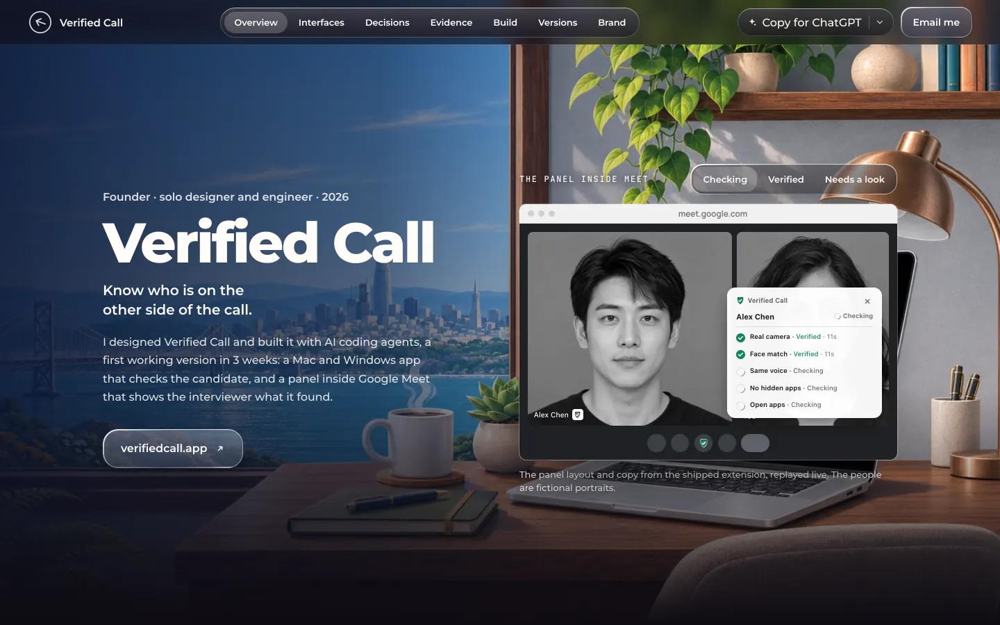
vc-desk-01-hero-checking.webp · Desktop 1440×900Hero: painted desk scene; left: "Founder · solo designer and engineer · 2026", title, "Know who is on the other side of the call.", a one-paragraph summary and a verifiedcall.app link. Right: "The panel inside Meet", a Checking / Verified / Needs a look toggle and a Meet window replaying the panel in the Checking state (two checks verified, three still checking).Decision shown: the hero shows the product working (a live replay of the shipped panel layout and copy) instead of a static device shot. Portraits are fictional.
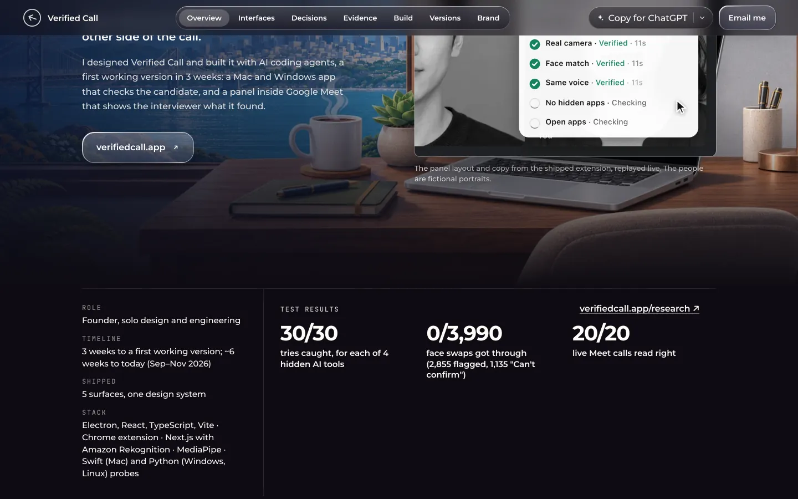
vc-desk-11-hero-results-strip.webp · Desktop 1440×900Bottom of the hero and the results strip: Role "Founder, solo design and engineering", Timeline "3 weeks to a first working version; ~6 weeks to today (Sep–Nov 2026)", Shipped "5 surfaces, one design system", Stack (Electron, React, TypeScript, Vite · Chrome extension · Next.js with Amazon Rekognition · MediaPipe · Swift and Python probes); test results "30/30 tries caught, for each of 4 hidden AI tools", "0/3,990 face swaps got through (2,855 flagged, 1,135 \"Can't confirm\")", "20/20 live Meet calls read right", linked to verifiedcall.app/research.Decision shown: claims are stated as test results with denominators, and the inconclusive count is shown rather than folded into "caught".
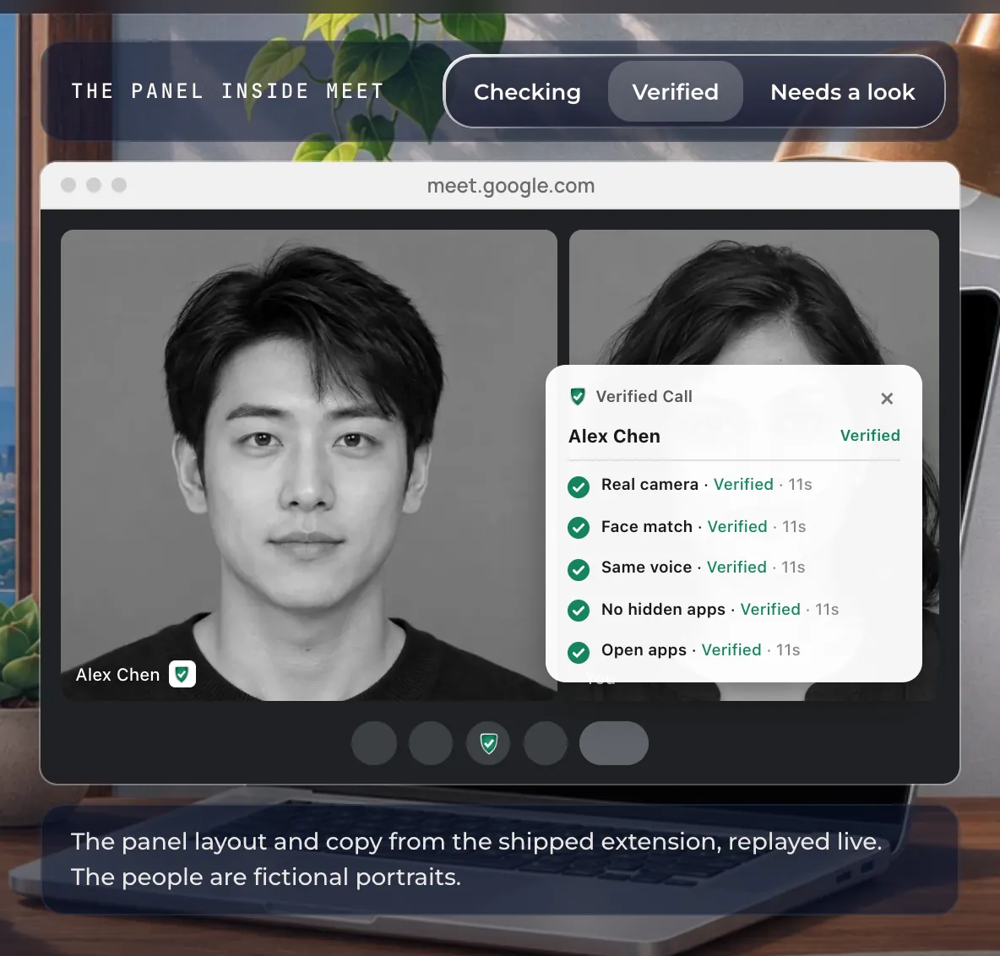
vc-desk-02-meet-panel-verified.webp · Desktop 1440×900, element crop at 2xThe hero panel held in the Verified state via the page's own toggle: all five checks (Real camera, Face match, Same voice, No hidden apps, Open apps) green with their times; status "Verified"; the guest tile badge turns green.Green is used only for a verified result.
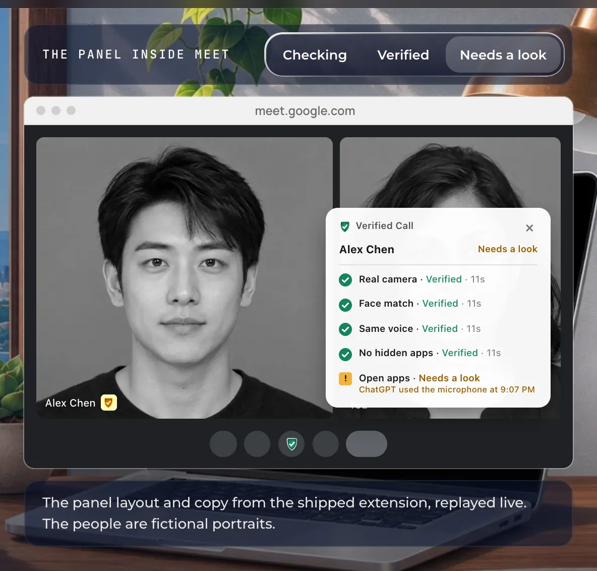
vc-desk-03-meet-panel-needs-a-look.webp · Desktop 1440×900, element crop at 2xThe same panel in the Needs a look state: four checks verified; "Open apps · Needs a look" in amber with the fact underneath ("ChatGPT used the microphone at 9:07 PM"); the tile badge turns amber.Decision shown: the panel names the observed event instead of a score or an accusation; amber, not red.
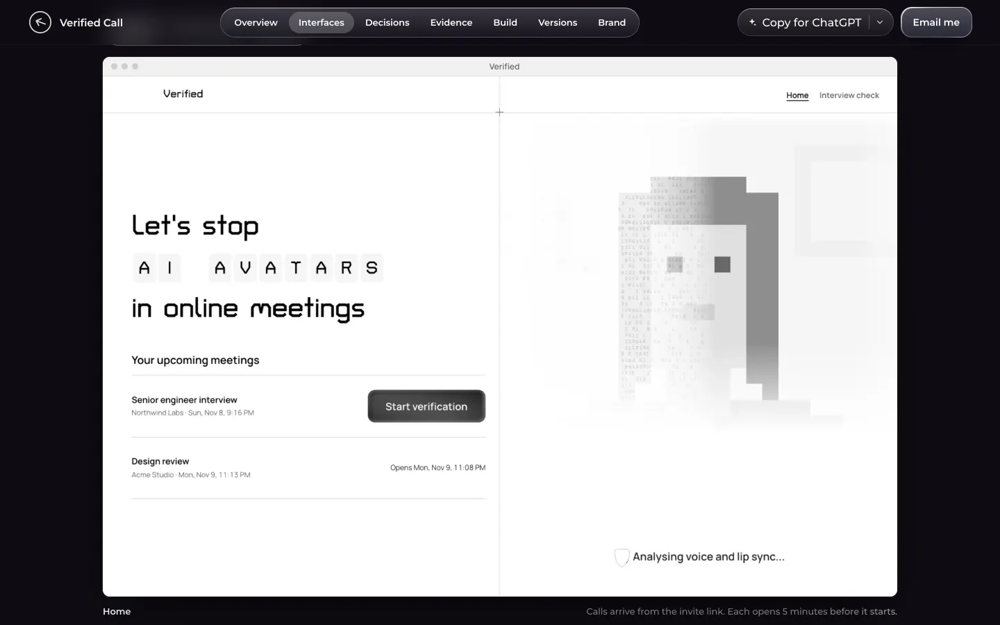
vc-desk-04-desktop-app-home.webp · Desktop 1440×900Section 2.1, the candidate's Mac/Windows app, Home tab of the viewer (tabs: Home, Setup check, Verified): split-flap headline "Let's stop AI AVATARS in online meetings", upcoming meetings with "Start verification", and a pixel-portrait panel "Analysing voice and lip sync…".The split-flap type (Turret Road) is the brand's signature motion; the app UI is light, the case-study page dark.
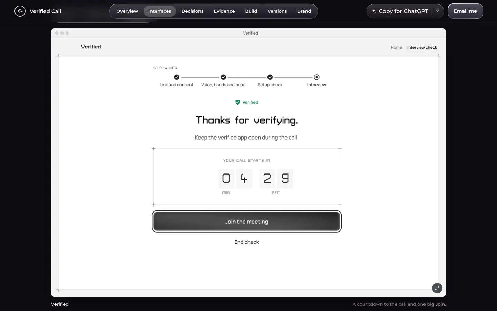
vc-desk-05-desktop-app-verified.webp · Desktop 1440×900The same viewer on the Verified tab: step 4 of 4 progress line, "Thanks for verifying.", a split-flap countdown "Your call starts in 04:29", one primary "Join the meeting" button and an "End check" link.One primary action per screen.
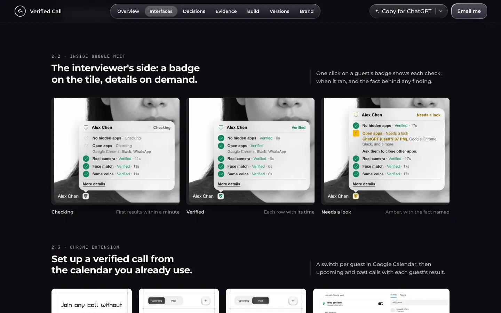
vc-desk-06-meet-states-side-by-side.webp · Desktop 1440×900Section 2.2, the interviewer's side: three crops of the panel on a guest tile, side by side: Checking ("First results within a minute"), Verified ("Each row with its time"), Needs a look ("Amber, with the fact named"). Below, the start of 2.3 Chrome extension (calendar setup).Comparison layout so the three states can be read against each other.
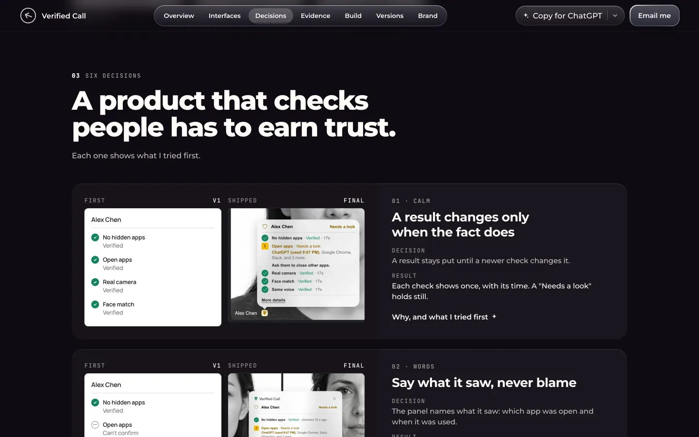
vc-desk-07-decisions.webp · Desktop 1440×900Section 03 "A product that checks people has to earn trust." Decision cards pair what was tried first (V1) with what shipped (Final), plus Decision / Result text: 01 Calm "A result changes only when the fact does"; 02 Words "Say what it saw, never blame".Each decision is shown as before/after UI, not prose alone.
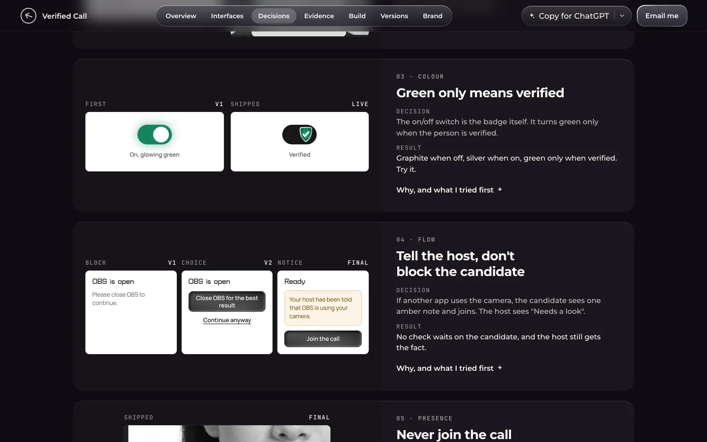
vc-desk-08-decisions-colour-and-flow.webp · Desktop 1440×900Decision cards 03 Colour "Green only means verified" (a green on/off toggle replaced by a graphite/silver switch that turns green only on verification) and 04 Flow "Tell the host, don't block the candidate" (Block → Choice → Notice iterations; final: candidate sees one amber note and can join).
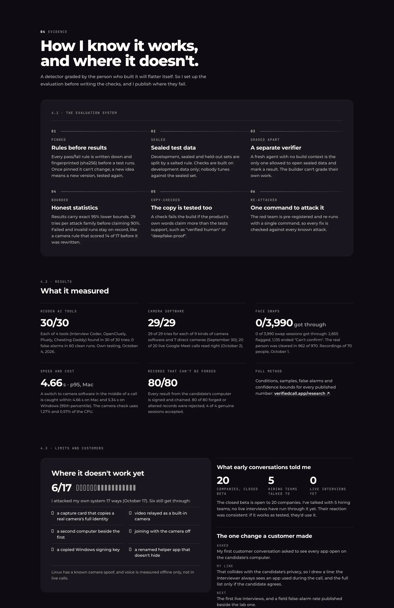
vc-desk-12-evidence.webp · Desktop 1440 wide, full sectionSection 04 "Evidence — How I know it works, and where it doesn't.": 4.1 the evaluation system as a six-step pipeline, with a link to the public evaluation code on GitHub (Pinned: rules fingerprinted before a test runs; Sealed: dev / sealed / held-out data; Graded apart: a fresh verifier marks results; Bounded: exact 95% lower bounds, 29 tries per family before claiming 90%, failures kept on record; Copy-checked: the build fails if product copy claims more than the tests; Re-attacked: a pre-registered red team re-run with one command). 4.2 "What it measured": 30/30 per hidden AI tool (0 false alarms in 60), 29/29 per kind of camera software, 0/3,990 face swaps got through (2,855 flagged, 1,135 "Can't confirm"), 4.66 s p95 on Mac to catch a camera switch (5.34 s Windows; ~1% CPU), 80/80 forged records rejected, and a link to the published method. 4.3 "Where it doesn't work yet": 6 of 17 self-attacks still get through, listed by category; "What early conversations told me" (20-company closed beta, 5 hiring teams talked to, 0 live interviews yet); "The one change a customer made" (asked / my line / next).Decision shown: the evaluation is designed before the detector, every number carries its denominator, date and conditions, and the open attacks are published next to the results.
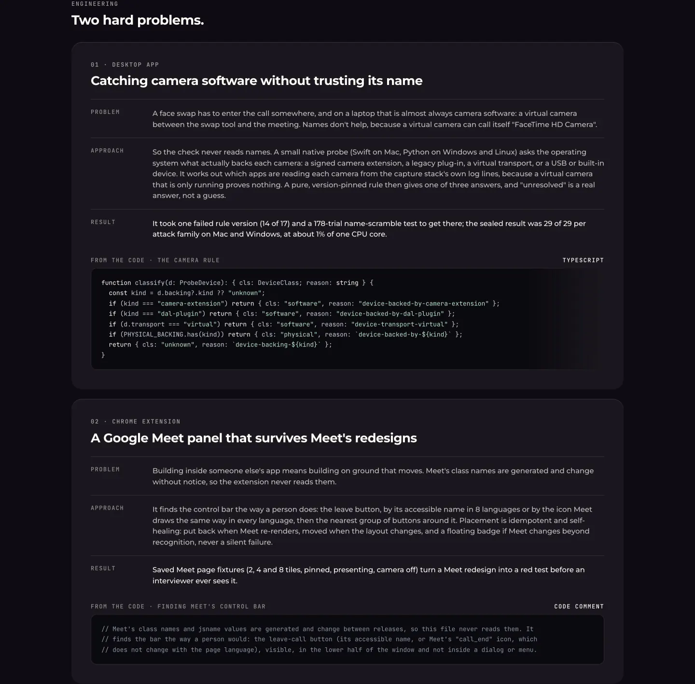
vc-desk-13-two-hard-problems.webp · Desktop 1440 wide, full blockEnd of section 06 "How it is built": "Two hard problems." 01 Desktop app, catching camera software without trusting its name (a native probe asks the OS what backs each camera; one failed rule version at 14 of 17 before 29 of 29), with a TypeScript excerpt of the classify() rule. 02 Chrome extension, a Google Meet panel that survives Meet's redesigns (finds the control bar the way a person does, self-healing placement, saved Meet fixtures as tests), with the code comment that states the approach. Each is laid out as Problem / Approach / Result.Shows engineering judgment in the designer's own product: robust to spoofed names and to a third-party UI that changes without notice.
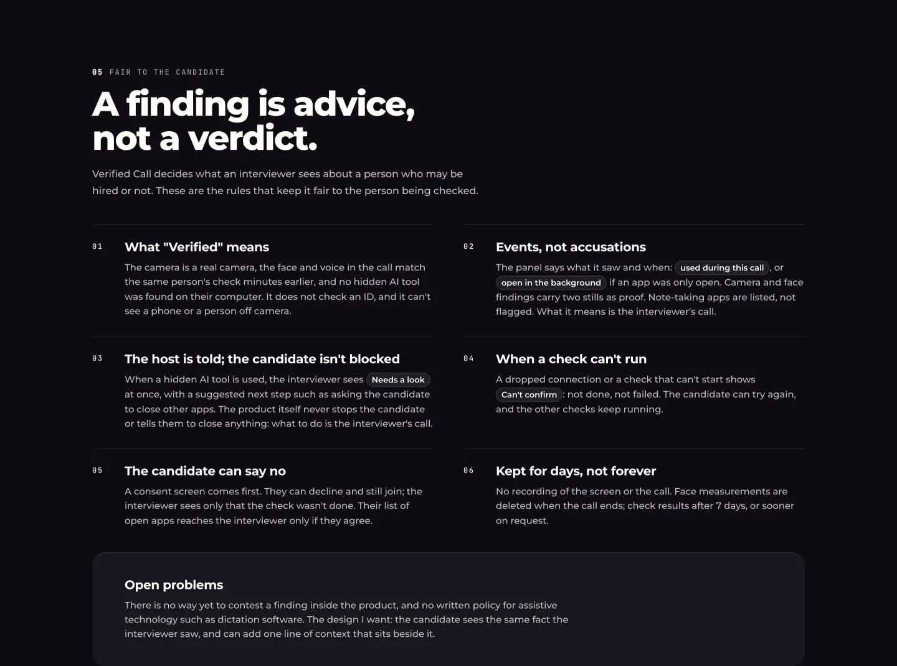
vc-desk-10-fair-to-the-candidate.webp · Desktop 1440 wide, full sectionSection 05 "Fair to the candidate — A finding is advice, not a verdict.": six numbered rules in two columns, with the product's own state words ("used during this call", "Needs a look", "Can't confirm") shown as chips: what "Verified" means (and does not: no ID check, can't see a phone or a person off camera); events, not accusations (note-taking apps listed, not flagged); the host is told, the candidate is never blocked by the product; "Can't confirm" when a check can't run; the candidate can say no (consent screen first, can decline and still join); kept for days, not forever (no recordings, face measurements deleted at call end, results after 7 days); and, set apart in its own panel, open problems (no in-product way to contest a finding, no policy yet for assistive tech such as dictation software).Decision shown: the limits and open problems are stated on the page, alongside the rules.
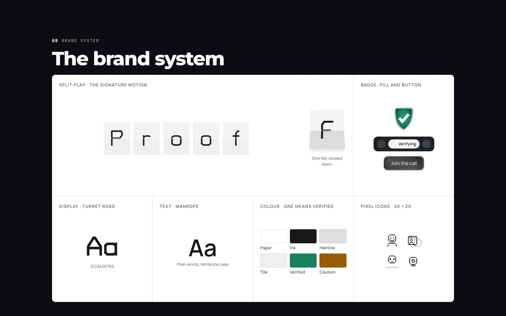
vc-desk-09-brand-system.webp · Desktop 1440×900Section 08 "The brand system": split-flap signature motion ("Proof", one tile slowed down), badge / pill / button, display type Turret Road, text type Manrope, colour (Paper, Ink, Hairline, Tile, Verified green, Caution amber: "one means verified"), 20×20 pixel icons.
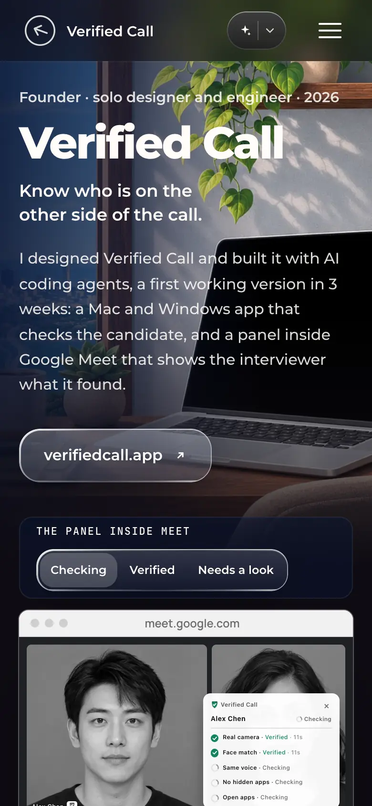
vc-phone-01-hero-checking.webp · Phone 390×844 (@2x)Hero on a phone: copy first, then the "Panel inside Meet" toggle and the Meet replay below it.Responsive behaviour: the two-column hero becomes copy-then-demo.
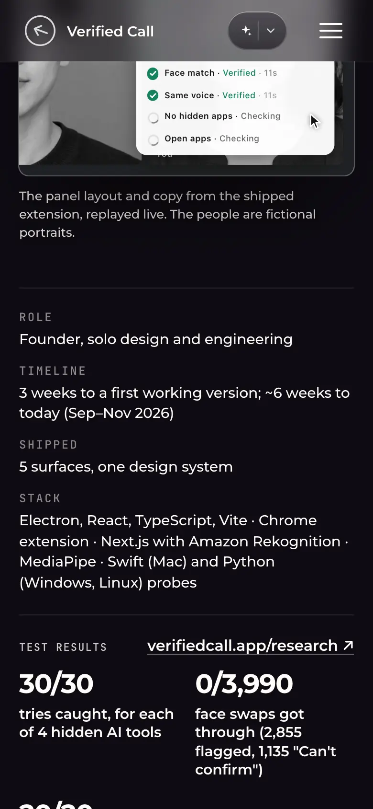
vc-phone-06-hero-results-strip.webp · Phone 390×844 (@2x)Results strip on a phone: role, timeline and the three test results stacked.
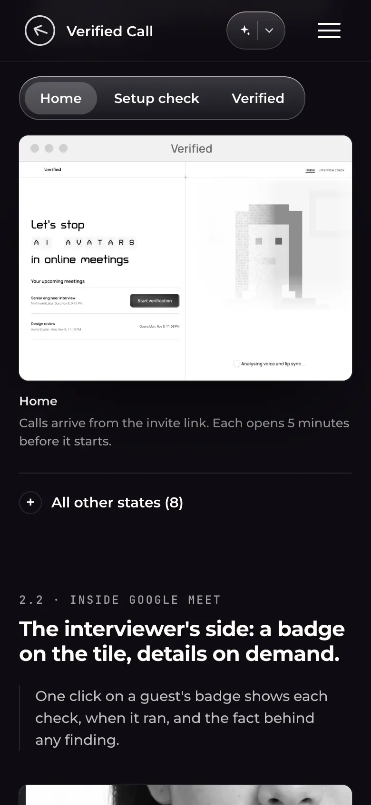
vc-phone-02-desktop-app-home.webp · Phone 390×844 (@2x)Desktop-app viewer on a phone: tabs stay as a segmented control; the app screenshot scales to the column width with its caption; "All other states (8)" expands below.
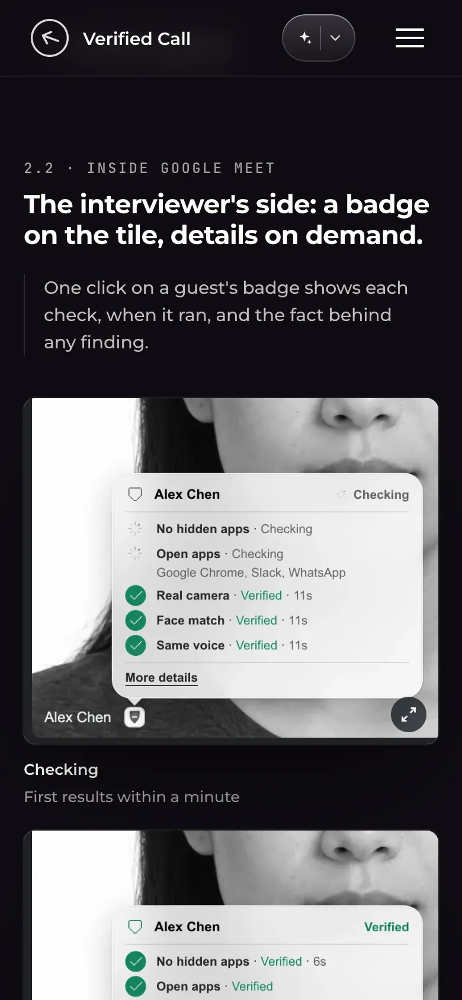
vc-phone-03-meet-states-side-by-side.webp · Phone 390×844 (@2x)Interviewer-side states on a phone: the three panel crops stack vertically, each with its caption.
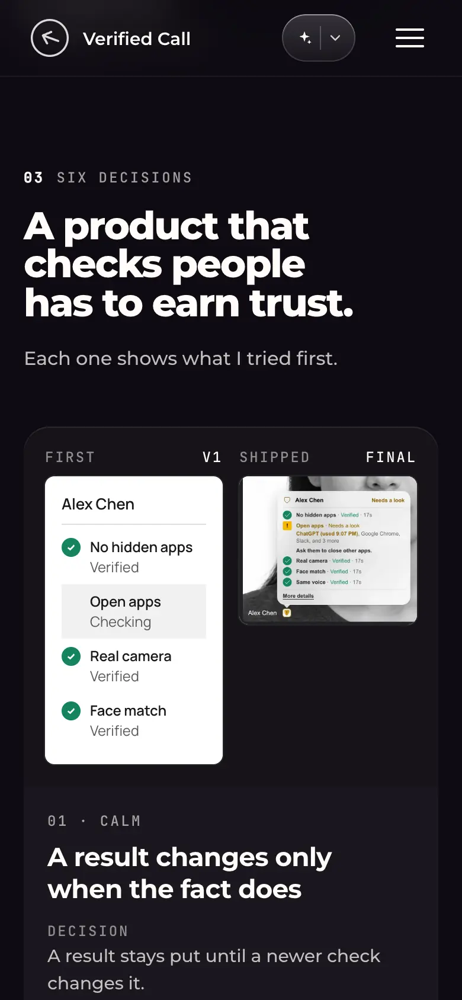
vc-phone-04-decisions.webp · Phone 390×844 (@2x)Decision cards on a phone: the before/after pair sits above the decision text.
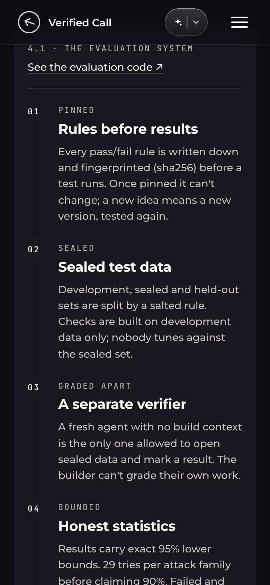
vc-phone-07-evidence-system.webp · Phone 390×844 (@2x)The evaluation pipeline on a phone: the six steps stack along a vertical rail, each with its stage word.
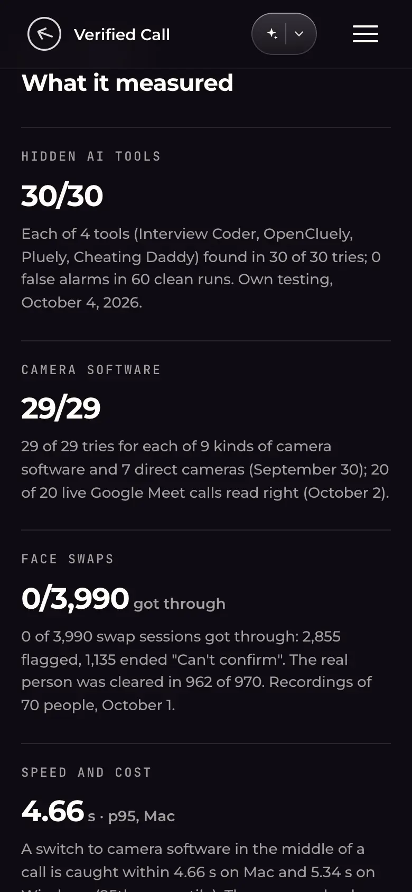
vc-phone-08-evidence-results.webp · Phone 390×844 (@2x)Results on a phone: the big figures with their conditions underneath ("0/3,990 got through", "4.66 s · p95, Mac").
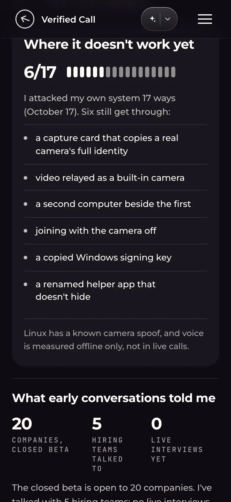
vc-phone-09-evidence-limits.webp · Phone 390×844 (@2x)Limits on a phone: the 6/17 tally (six hollow marks for the attacks that still get through), the list of open attacks, then the early-conversation numbers (20 / 5 / 0).
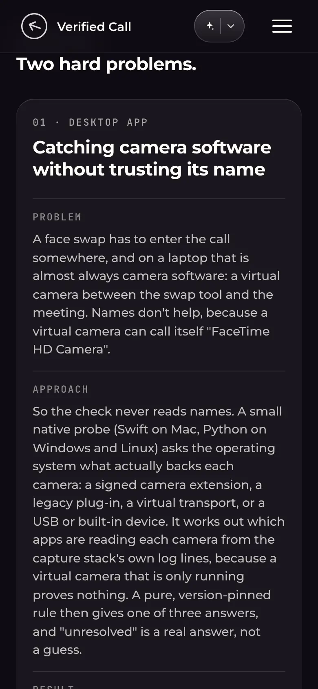
vc-phone-10-two-hard-problems.webp · Phone 390×844 (@2x)"Two hard problems" on a phone: Problem / Approach / Result stack; the code excerpt scrolls inside its frame, and the comment excerpt wraps.
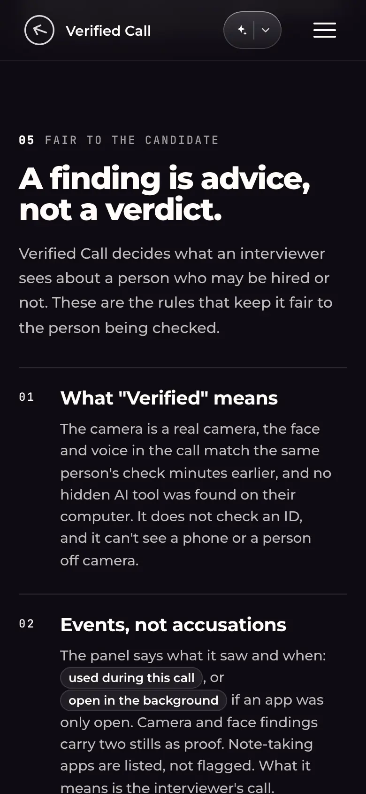
vc-phone-05-fair-to-the-candidate.webp · Phone 390×844 (@2x)"Fair to the candidate" on a phone: the numbered rules become one column separated by hairlines; the open-problems panel follows.
Case study: Stressie
stressie-v4.html. iOS app case study; the phone screens on the page are captures of the SwiftUI build running in the iOS simulator. Live: https://bhanu.build/stressie-v4.html
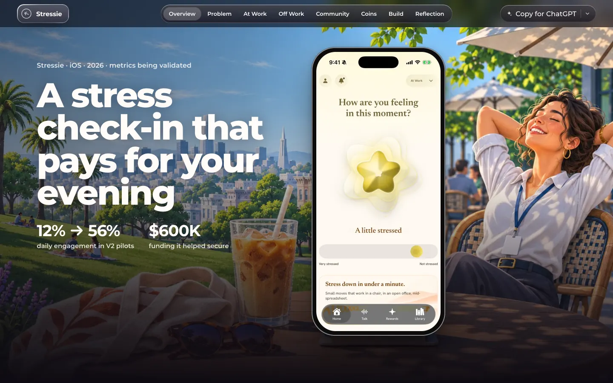
st-desk-01-hero.webp · Desktop 1440×900Hero: "Stressie · iOS · 2026 · metrics being validated", headline "A stress check-in that pays for your evening", "12% → 56% daily engagement in V2 pilots", "$600K funding it helped secure"; the check-in screen ("How are you feeling in this moment?", "A little stressed", slider) on an iPhone over the painted café scene.The kicker states that metrics are still being validated.
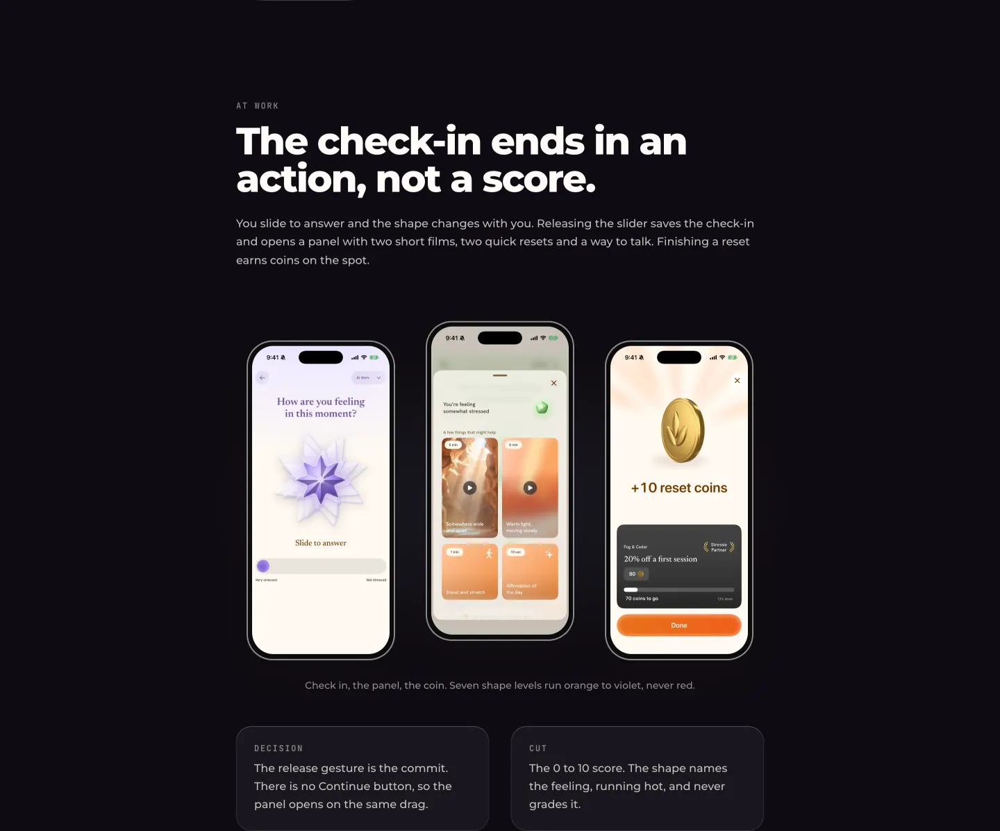
st-desk-02-checkin-flow.webp · Desktop 1440 wide, full sectionSection "The check-in ends in an action, not a score.": three screens (slide-to-answer with a shape that changes, the panel with two short films and two quick resets, "+10 reset coins"), with Decision ("The release gesture is the commit…") and Cut ("The 0 to 10 score…") notes.Each section pairs the screens with one decision and one thing that was cut.
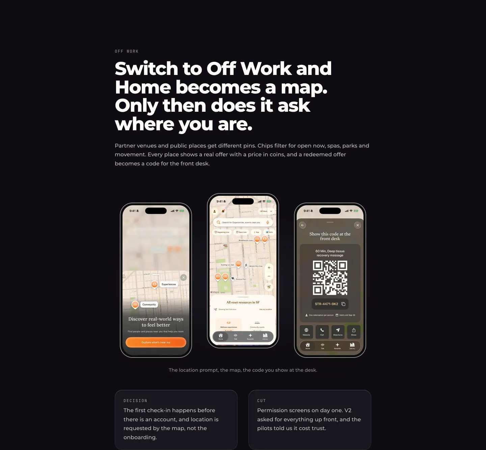
st-desk-03-offwork-map.webp · Desktop 1440 wide, full sectionSection "Switch to Off Work and Home becomes a map. Only then does it ask where you are.": location prompt, the map with partner pins and filter chips, and the redemption code shown at the front desk.Decision: location permission is requested by the map, at the moment it is needed, not during onboarding.
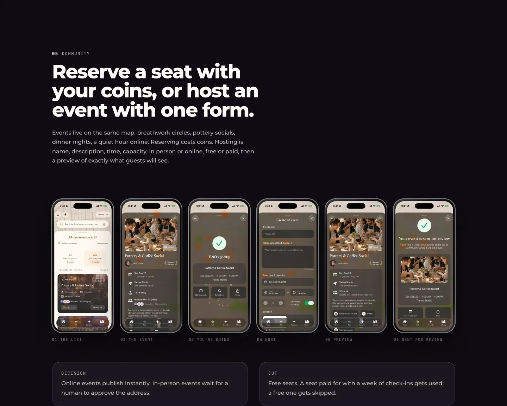
st-desk-04-community-events.webp · Desktop 1440 wide, full sectionSection "Reserve a seat with your coins, or host an event with one form.": six screens in sequence (the list, the event, you're going, host, preview, sent for review).Decision: online events publish instantly; in-person events wait for human approval of the address.
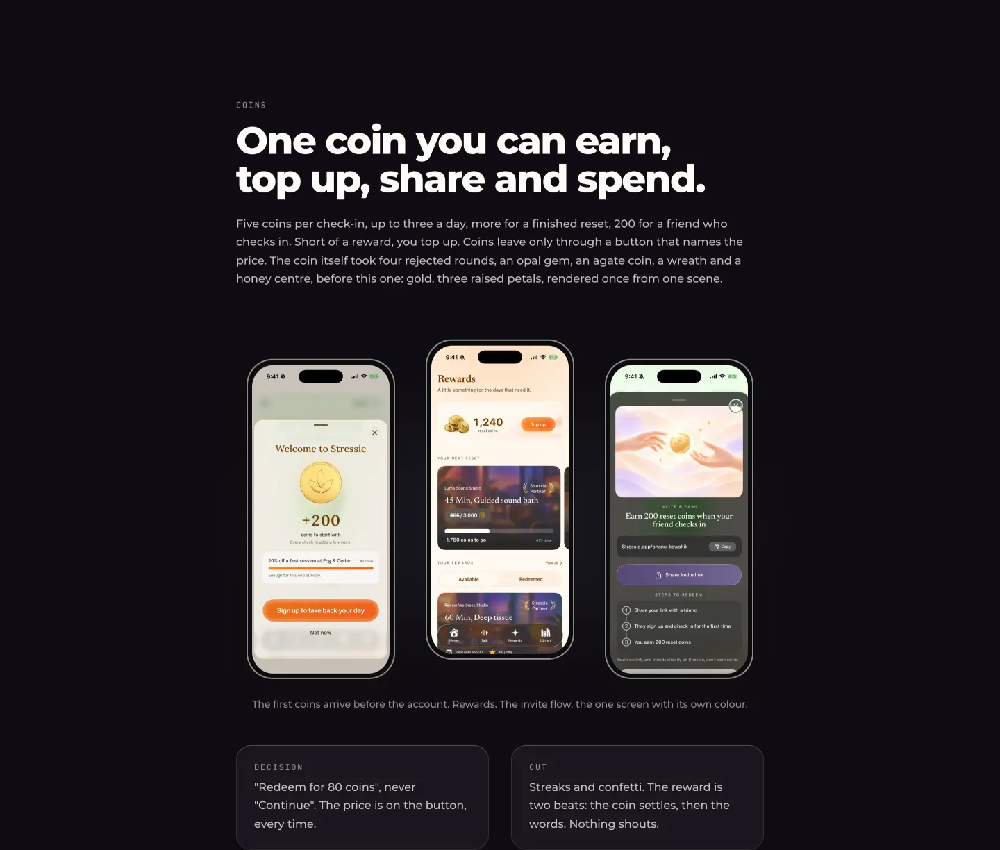
st-desk-05-coins.webp · Desktop 1440 wide, full sectionSection "One coin you can earn, top up, share and spend.": welcome (+200), Rewards balance, and the invite screen; the coin artwork is gold with three raised petals.
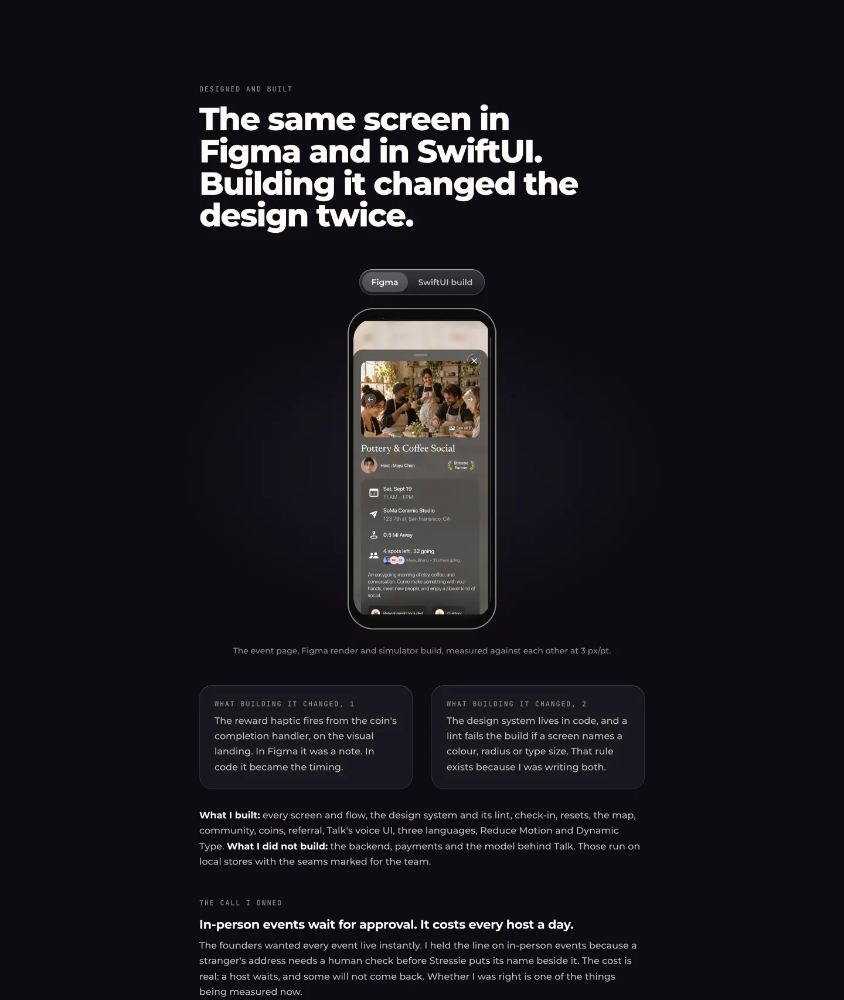
st-desk-06-figma-vs-swiftui.webp · Desktop 1440 wide, full sectionSection "The same screen in Figma and in SwiftUI. Building it changed the design twice.": a Figma / SwiftUI build toggle over the event page, two notes on what building changed, "What I built / What I did not build", and "The call I owned".States what was and was not built by the designer.
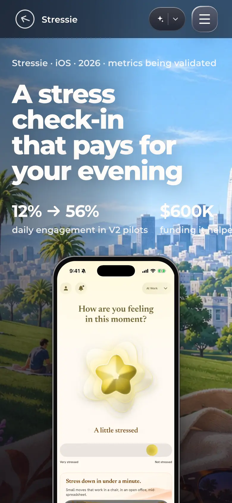
st-phone-01-hero.webp · Phone 390×844 (@2x)Hero on a phone: headline and metrics over the painting, the check-in phone below.
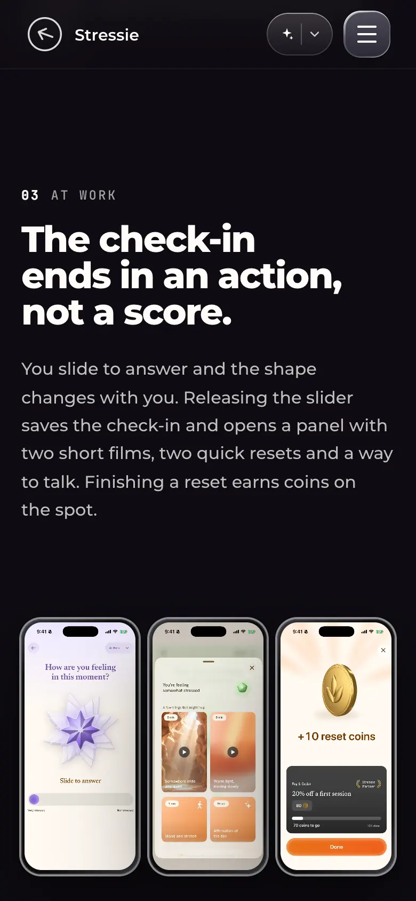
st-phone-02-checkin-flow.webp · Phone 390×844 (@2x)Check-in section on a phone: copy first, then the three screens in a row at reduced size.
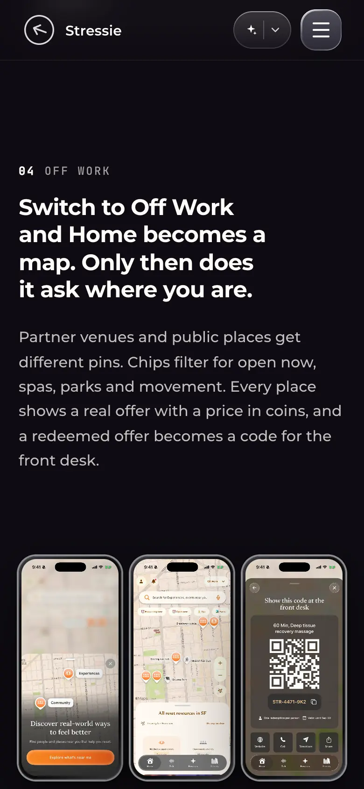
st-phone-03-offwork-map.webp · Phone 390×844 (@2x)Off Work map section on a phone.
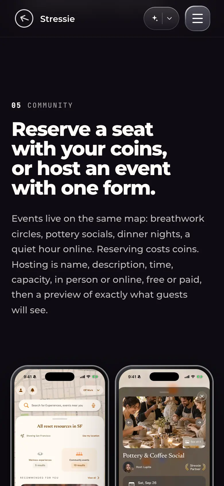
st-phone-04-community-events.webp · Phone 390×844 (@2x)Community section on a phone: the six-screen sequence continues past the right edge as a horizontal row.
etl-desk-01-hero.webp · Desktop 1440×900Hero: "Sole product designer · EverTutor", headline "Designed a 0→1 voice AI tutor that reached ~2,000 learners.", "$9.5M seed-funded", "~2,000 learners", tags "Mar 2025 – May 2026" and "8+ schools"; painted kitchen scene with the product on the laptop.
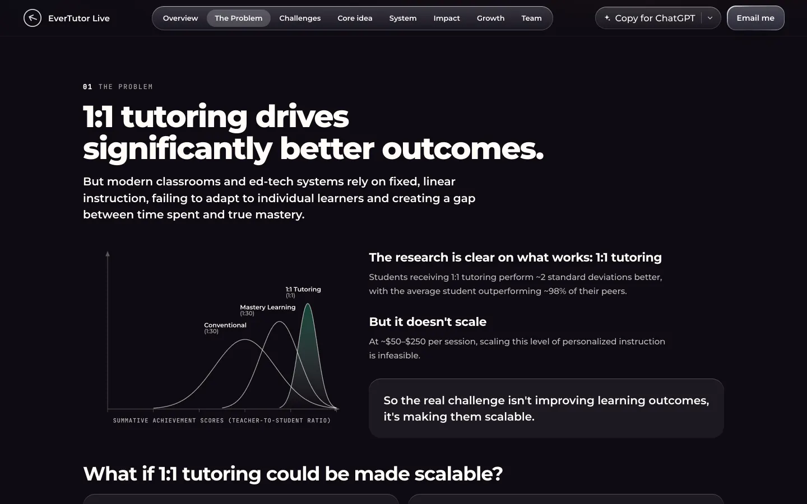
etl-desk-02-problem-bloom-curve.webp · Desktop 1440×900Section "1:1 tutoring drives significantly better outcomes.": a drawn chart of achievement distributions (Conventional, Mastery Learning, 1:1 Tutoring) beside the research summary and "But it doesn't scale".The problem is framed with Bloom's 2-sigma distributions drawn as an SVG chart.
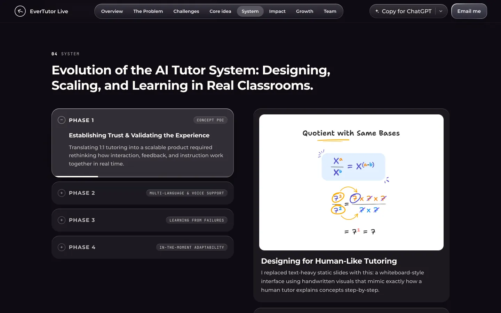
etl-desk-03-phase-accordion.webp · Desktop 1440×900Section "Evolution of the AI Tutor System": a four-phase accordion (Phase 1 Concept POC open, with a progress bar that advances it) and, right, the scrolling evidence card for the phase ("Designing for Human-Like Tutoring", whiteboard-style handwritten maths visual).
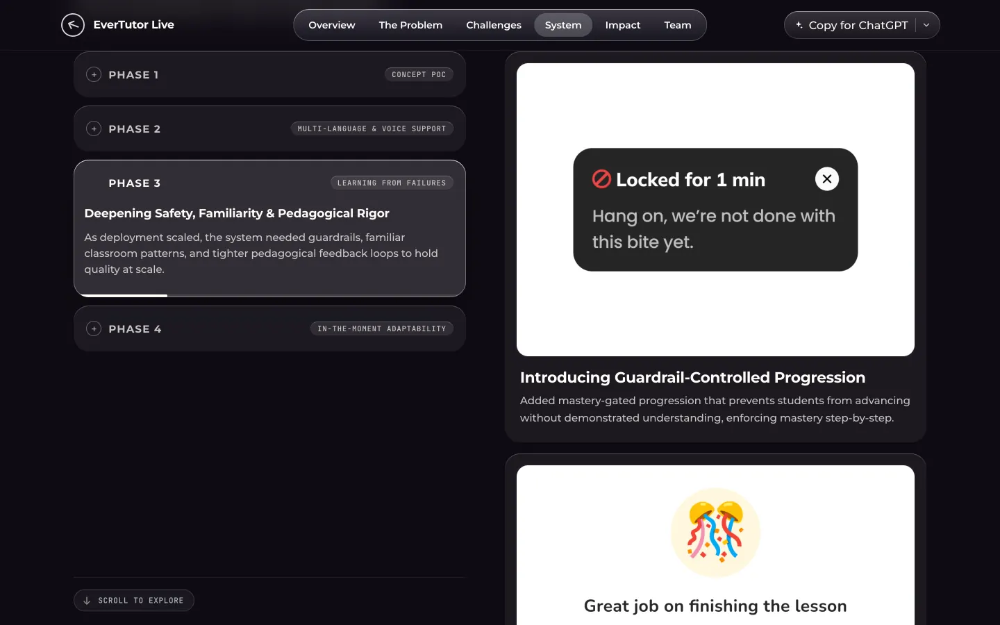
etl-desk-04-phase-accordion-phase-3.webp · Desktop 1440×900The accordion with Phase 3 "Deepening Safety, Familiarity & Pedagogical Rigor" opened; right: "Introducing Guardrail-Controlled Progression" ("Locked for 1 min — Hang on, we're not done with this bite yet.") and a lesson-complete card.
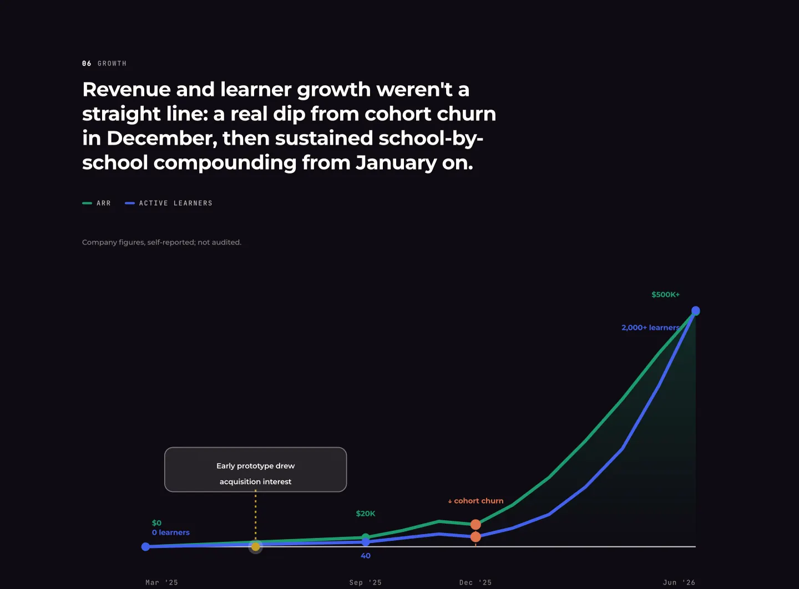
etl-desk-05-growth-chart.webp · Desktop 1440 wide, full sectionSection "Revenue and learner growth weren't a straight line…": ARR and active-learners lines from Mar '25 to Jun '26 ($0 → $20K → $500K+; 0 → 40 → 2,000+ learners), a marked cohort-churn dip in Dec '25, the "Early prototype drew acquisition interest" callout, and the note "Company figures, self-reported; not audited."The dip is labelled on the chart rather than smoothed out; the source caveat sits under the legend.etl-desk-06-impact.webp · Desktop 1440×900Section Impact, "Took the tutor from controlled sessions into live classrooms: ~2,000 learners across 8+ schools.": six numbered findings (01 "~25% higher completion" with an attribution caveat; 02 Validated in real classrooms; 03 Scaled to ~2,000 learners; 04 Expanded school pilots; 05 Shipped adaptive tutoring; 06 Content at product speed).etl-phone-01-hero.webp · Phone 390×844 (@2x)Hero on a phone: painting on top, headline and metrics below.etl-phone-02-problem-bloom-curve.webp · Phone 390×844 (@2x)Problem section on a phone with the distribution chart.etl-phone-03-phase-accordion.webp · Phone 390×844 (@2x)Phase accordion on a phone: phases become a four-segment selector (01–04) above the phase text and evidence card.Responsive behaviour: the accordion is replaced by a segmented control.etl-phone-04-growth-chart.webp · Phone 390×844 (@2x)Growth chart on a phone: fewer labels than desktop, with the self-reported note under the legend.
ets-desk-01-hero.webp · Desktop 1440×900Hero: kicker "Sole Product Designer · Lead Curriculum Designer · 2025 – Mid 2026", headline "Built the content creation tool that cut lesson production from 104 hours to 4", "104h → 4h to make a lesson", "3,000+ lessons made"; the Studio product video plays on the painted monitor ("Generate an interactive AI lesson in just one step").ets-desk-02-authoring-screen-lesson-editor.webp · Desktop 1440×900, element crop at 2xClose crop of the hero video: the Studio lesson editor: slide canvas ("Let's learn about Compound Interest", handwritten-style worked steps $1,000 → $1,331, formula), formatting toolbar, Preview / Teach, and an "Appearance Order" list that sets the order in which the tutor reveals each element.This list is how educators control what the AI tutor shows and when.ets-desk-03-authoring-screen-grade-mission.webp · Desktop 1440×900, element crop at 2xClose crop of the hero video: "Choose a Grade / Mission": grade chips K–8 (3 selected) and mission cards (Multiply and Divide Friendly Numbers, Measure It, …).ets-desk-04-old-vs-new-workflow-104-to-4.webp · Desktop 1440×900Section Impact: old workflow (3 disconnected tools: Slides.com + Mermaid + Canva, "104 hrs per lesson") → new workflow (Studio, "4 hrs"), both counters at their final values; below, numbered outcomes 01–06 (01 "96% faster lesson creation" with "~4.5 hours on average across ~700 logged lessons"; 06 "Control over how the tutor teaches").The before/after is a single comparison panel with counted numbers.ets-desk-05-constraints.webp · Desktop 1440×900Section "Constraints & design tradeoffs": a pull quote on cutting scope ("less flexible on paper, but the only version that could actually ship and scale") and the constraint list (production time vs scale, timeline, control vs complexity), each ending in an arrowed principle.ets-desk-06-outcomes.webp · Desktop 1440×900Section Outcomes: "104 hrs → 4 hrs", "~700 lessons, ~4.5 hrs avg", "Restored control to educators", "Subject-agnostic by design", "<2 hours" to onboard, and the start of a testimonial strip from content designers.ets-phone-01-hero.webp · Phone 390×844 (@2x)Hero on a phone: painting with the product video on top, kicker, headline and metrics below.ets-phone-02-old-vs-new-workflow-104-to-4.webp · Phone 390×844 (@2x)The old-vs-new comparison on a phone: the two panels stack with a down arrow between them.ets-phone-03-constraints.webp · Phone 390×844 (@2x)Constraints section on a phone.ets-phone-04-outcomes.webp · Phone 390×844 (@2x)Outcomes on a phone: metric blocks stack in one column.
Captured with Playwright driving Google Chrome against the site files; screenshots encoded as WebP, clips from Chrome screencast frames encoded with ffmpeg by frame timestamp.